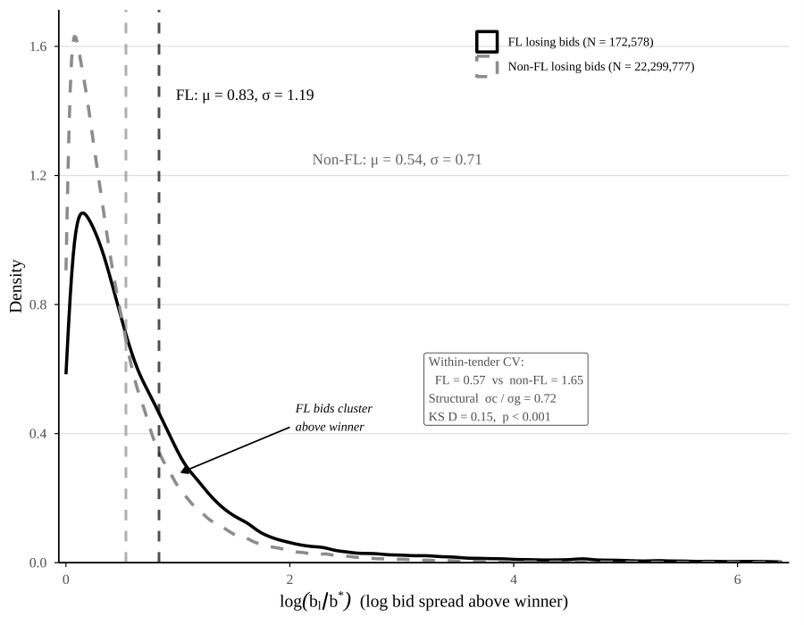
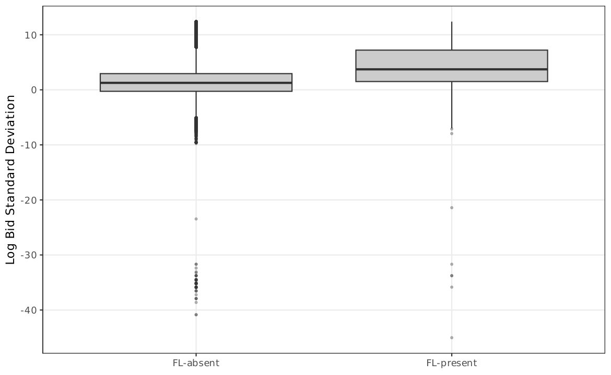
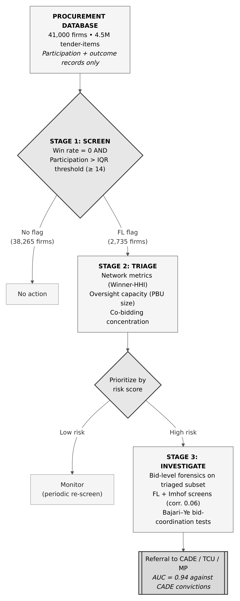
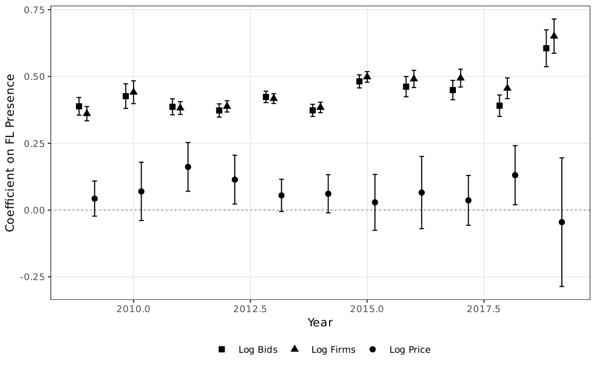
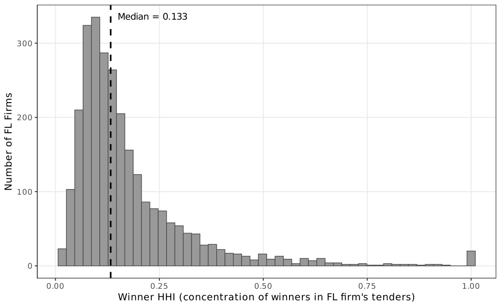

Extensions¶
This page presents additional analyses: structural diagnostic, supporting diagnostics, bid rotation and inflation, strategic adaptation, and the Lei 14.133/2021 discussion.
Structural Diagnostic¶
BIC Model Selection¶
BIC strongly favors Regime 2 (coordinated cover bidding) over Regime 1 (complementary): \(\Delta\)BIC \(= -91{,}473\).
| Parameter | Estimate | Interpretation |
|---|---|---|
| \(\hat{\sigma}_c / \hat{\sigma}_g\) | 0.72 | FL bids are 28% less dispersed than non-FL bids |
| \(\hat{\gamma}\) | 0.69 | Strategic complementarity: more cover bidders in more competitive tenders |
| \(n\)-conditional markup | 6.4% | Close to OLS baseline |
{kind=link}

{kind=link}

Dispersion-based screens lose power under Regime 2
When cover bids cluster near the winning bid rather than scattering above it, variance-based screens interpret FL tenders as competitive. A participation-based screen sidesteps this problem entirely.
Supporting Diagnostics (M1--M5)¶
M1: Competitive Displacement¶
FL-present tenders have +0.19 more non-FL firms (\(p < 0.01\)). FL firms add to participation rather than substitute for it. A Cox model shows FL exposure is associated with lower exit hazard (HR = 0.60, \(p < 0.01\)): firms in FL-exposed markets survive longer, the opposite of crowding-out.
M2: Reference Price Anchoring¶
In FL-present tenders, winners bid 4% closer to the BEC reference price (\(-0.041\), \(p < 0.01\)), consistent with calibration around a public anchor.
M3: Reverse Causality¶
Within item markets, a 10% lagged-price increase raises FL entry probability by 0.02 pp (\(\hat{\beta} = 0.0021\), SE = 0.0008). The elasticity is too small to explain much of the 6.4% price association.
M4: Dyadic Linkage¶
A stratified permutation test (1,000 iterations, preserving participation quartiles) shows FL firms form 4,696 high-frequency co-bidding pairs (\(\geq 5\) shared tenders) versus a permuted mean of 3,271 (\(p < 0.001\)).
M5: Firm Exit¶
Cox model: HR = 0.60 (\(p < 0.01\)). FL-exposed firms survive longer---the opposite of crowding-out. Together with M1, the result suggests FL firms add noise rather than competition.
Bid Rotation and Bid Inflation¶
Winner Persistence¶
FL firms' winner HHI: 0.178 (14.3 unique winners) vs. non-FL always-losers: 0.303 (5.0 winners; \(p < 0.001\)). FL firms co-participate with a wider range of winners, consistent with rotation of designated winners across competitive markets.
Repeated FL--Winner Pairs¶
Among 38,941 FL--winner pairs, 4,696 share \(\geq 5\) tenders and 379 share \(\geq 20\) (maximum: 177). Non-FL pairs average only 1.46 shared tenders with 494 pairs reaching \(\geq 5\). The heavy right tail is consistent with persistent co-bidding relationships.
Bid Inflation¶
FL median bid-to-winner ratio: 1.85 (85% above the winner) vs. 1.43 for non-FL losers. Controlling for item and year FE, FL bids are 15.4% higher (\(p < 0.001\)).
Strategic Adaptation¶
A sophisticated cartel could rotate its cover bidders or let them win occasionally to stay below the threshold---and the threshold sensitivity analysis already suggests some do. Any operational deployment would need periodic recalibration alongside bid-level tools, which is why the three-stage workflow treats the screen as a first stage rather than a final word.
Minimum-Bidder Constraint Variation¶
Interacting FL with a constraint-binding indicator yields:
| Channel | Coefficient | SE | Interpretation |
|---|---|---|---|
| FL (\(n \geq 3\), voluntary) | 0.076 | (0.021) | 7.6% voluntary premium |
| FL \(\times\) (\(n < 3\), forced) | \(-0.160\) | -- | Negative interaction (\(p < 0.001\)) |
The price association concentrates where cover bidding is a strategic choice. The convite rule forces some participation regardless of market conditions, diluting the signal.
Lei 14.133/2021 Predictions¶
Brazil's recent procurement reform offers a natural laboratory. Two predictions follow:
-
Constraint-binding channel disappears. The reform eliminates convite and with it the minimum-bidder rule. The negative FL interaction with the quorum binding indicator (\(-0.160\)) should vanish.
-
Voluntary channel survives. The 7.6% premium where \(n \geq 3\) reflects strategic choice rather than rule compliance. This channel should persist since the behavioral footprint the screen exploits (cover bidders must participate) does not depend on the procurement format.
The reform also introduces new modalities (dialogo competitivo, concorrencia eletronica) with different participation incentives. The transition period, with federal, state, and municipal entities adopting the new law at different speeds, creates quasi-experimental variation for testing portability.
Three-Stage Enforcement Pathway¶
{kind=link}

| Stage | Action | Data Required |
|---|---|---|
| 1. Screen | Apply FL rule to participation records | Firm, tender, outcome |
| 2. Triage | Cross-reference with network metrics and oversight indicators | Co-bidding data, PBU size |
| 3. Investigate | Deploy bid-level forensic tools on triaged subset | Bid microdata |
Two features make the screen administrable:
- Threshold robustness: varying the IQR multiplier from 1.0x to 3.0x and the win-rate cutoff from 0% to 5% yields significant coefficients across all 36 combinations.
- Minimal data: participation and outcome records that every procurement system already collects.
Year-by-Year Stability¶
{kind=link}

Stable across time
The FL--price association is not driven by a particular time period. Coefficients are positive and significant in most years, with no clear trend.
Network Diagnostics¶
{kind=link}
